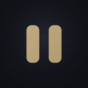
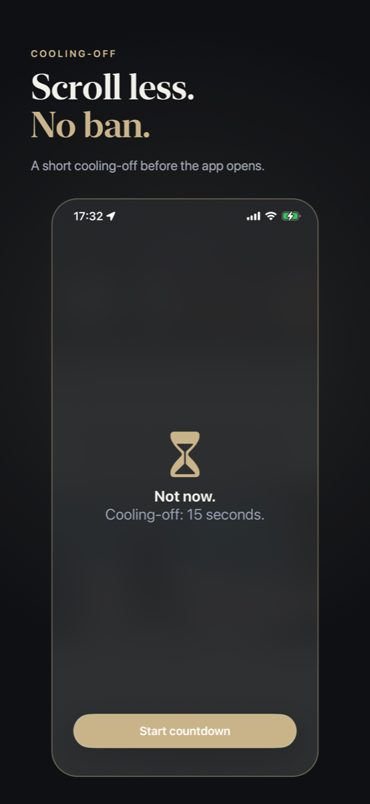
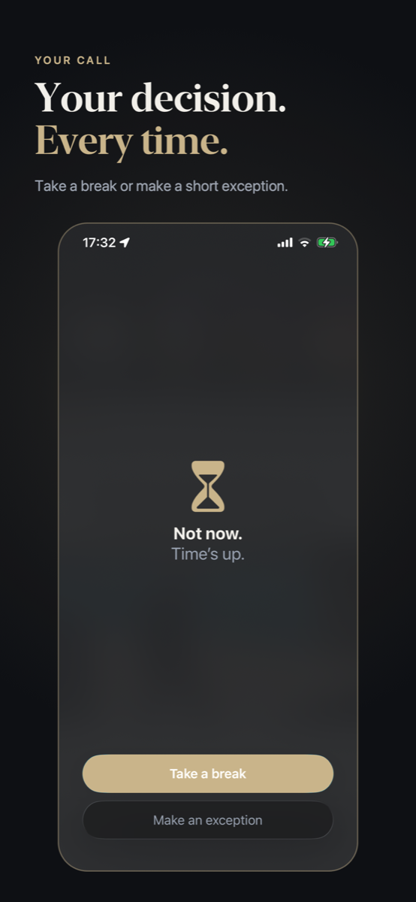
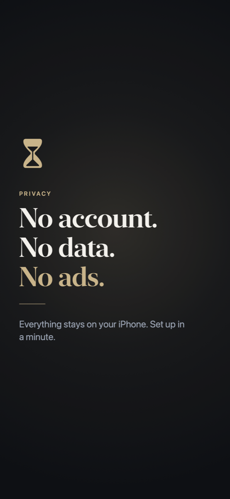

Off HoursPut the phone down in the evening, without a fight with your willpower.
Off Hours holds the apps that keep you up at night during the hours you set. When you open one of them, your iPhone first shows a short cooling-off. Then you decide on purpose: take a break, or make an exception. No ban, no tricks, just a moment to think.
Free with one schedule for up to two apps. More with Off Hours Plus, as a yearly or monthly subscription.



How it works
- Set a time window, for example 9 PM to 7 AM, on the days you choose.
- Pick the apps. Off Hours uses your iPhone's Screen Time for this.
- From then on iOS takes over: the cooling-off starts on time, even when Off Hours is closed.
- After an exception the app stays open for a few minutes, then the cooling-off applies again.
- Home Screen widget with the current status.
No account. No data. No ads.
No account, no server, no analytics. Everything stays on your iPhone. Off Hours stores the apps you choose only as encrypted identifiers from iOS. Off Hours does not see how long you use apps, and it records nothing.
Honestly
Off Hours is an aid, not a safeguard against yourself. Any schedule can be switched off at any time. Off Hours pauses apps, not websites.
Press
Material for coverage, free to use without asking. Questions and review access: apps@nxtchange-consulting.com.
Short description
Off Hours is an iPhone app from Graz, Austria, that holds the apps you choose during the hours you set and adds a short cooling-off first. Users then decide on purpose: take a break or make an exception. The app needs no account, no server and no analytics; all data stays on the device. Off Hours is free with one schedule for up to two apps; Off Hours Plus extends it. The developer is nxtChange Consulting FlexCo.
Facts
- Platform
- iPhone, iOS 17 or later
- Released
- 8 October 2026, version 1.0
- Countries
- 38 European countries, English and German
- Price
- Free; Off Hours Plus as a yearly or monthly subscription, prices shown in the app
- Developer
- nxtChange Consulting FlexCo, Graz, Austria